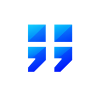

|
 TwoSemiA small keyboard-first productivity utility for Windows. Ctrl + ; Ctrl + ; Notes. Reminders. Todos. Focus mode. Streaks. Saved AI chats. DownloadGet the latest Windows installer from GitHub Releases. SourceTwoSemi is open source. View the source code. StatusEarly native C++ build. Windows only. TwoSemi · anmism |